The four O’s in the wordmark are the four campaign colourways, always in the same order. When a dot matches its background it becomes an ink ring, the only variation allowed.
Campaign · Identity · Promotional printThree projects
Campaign &
visual design.
A retail campaign, a theatre poster and a theatre programme. Each starts from one graphic idea and carries it into every format the audience meets.
01 · Campaign systemMiffy ECO Fuzzy · Autumn / Winter 2026 · Unofficial exploration
A little world
of colour.
One campaign for a recycled plush range, built as a system: a wordmark, four colourways and four type voices, applied from a web hero to a retail table.
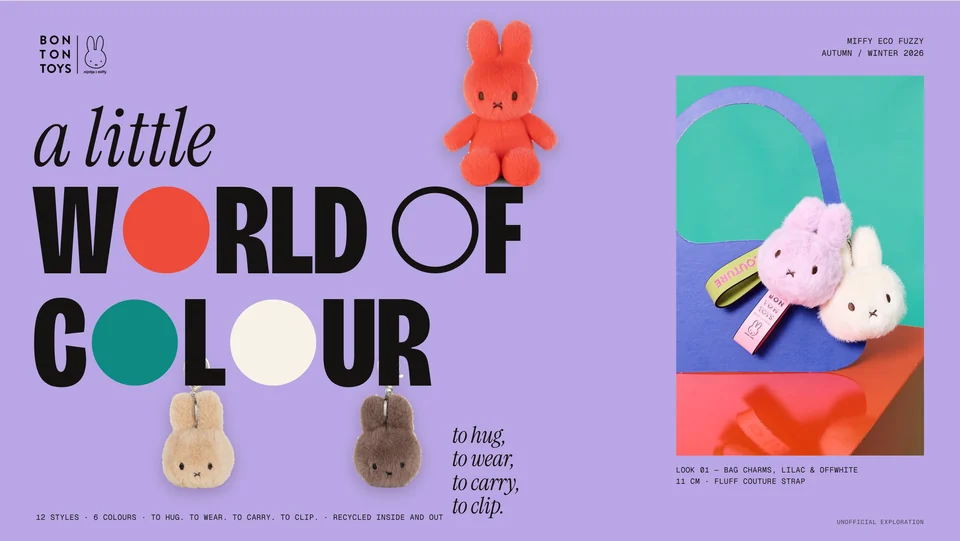
The project
An independent campaign exploration for Bon Ton Toys’ Miffy ECO Fuzzy range. The ideas, type system, layouts and commercial content are new; the product photography is Bon Ton Toys’ own.
The design problem
Twelve products in four formats and six colours. The campaign had to make the range easy to read and keep the same voice from a phone screen to a shop floor.
Applications
- Campaign hero 1920 × 1080
- Instagram carousel 5 × 1080 × 1350
- Fashion poster 50 × 70 cm
- Catalogue spread A4 × 2
- Sell-in & order sheet A4
- POS kit · In-store composite Retail
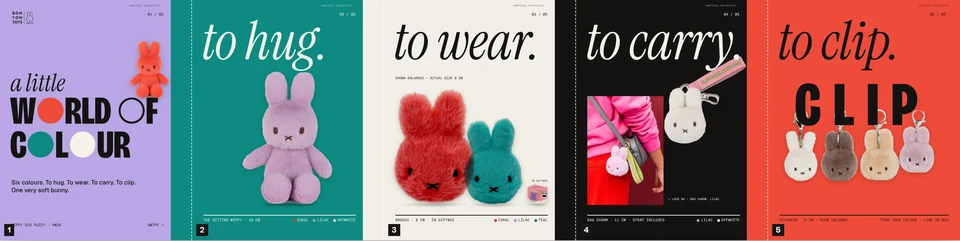
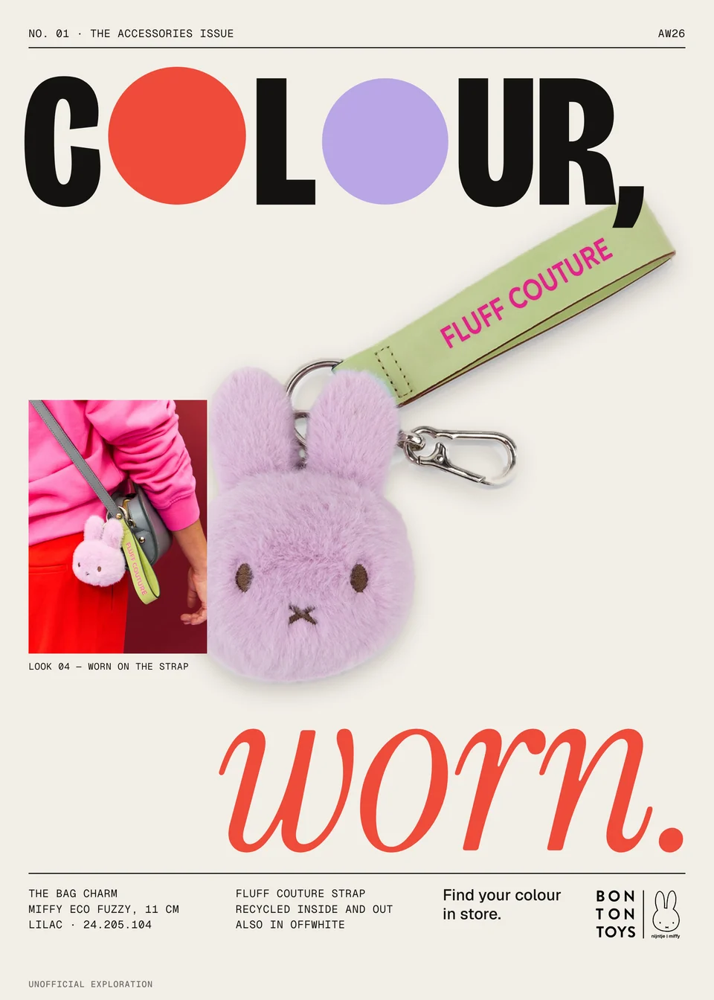
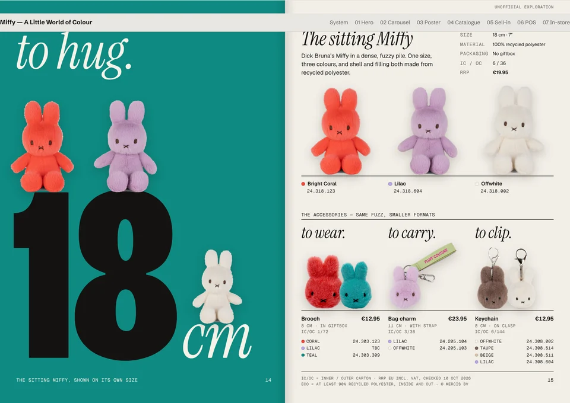
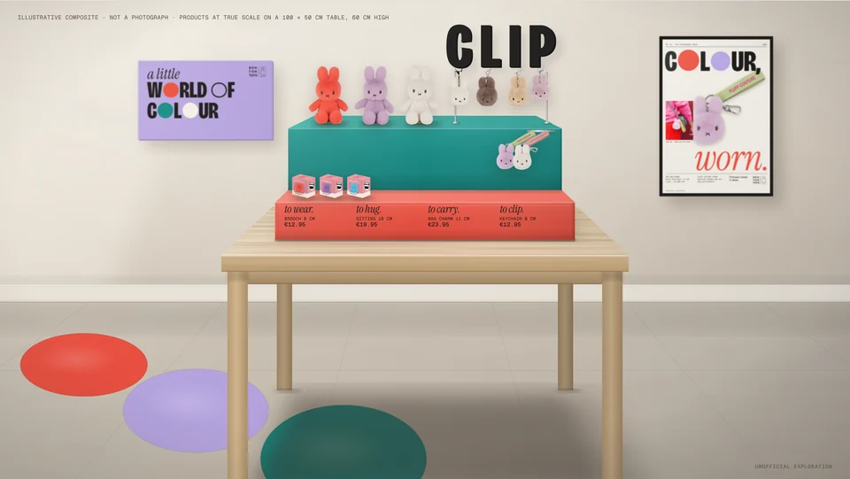
Design decisions
Products sit on cap lines or clip behind letter stems, placed by measuring the real glyphs. The range’s four formats became the copy: to hug, to wear, to carry, to clip.
When a product is enlarged, the layout says so and gives the real size. In the catalogue the size is the image: three 18 cm Miffys sit on an oversized “18”.
Independent, unofficial creative exploration. The product photography is Bon Ton Toys’ own, and no licensed character has been altered. Not commissioned or approved by Bon Ton Toys or Mercis bv. Miffy © Mercis bv.
See the full campaign system →02 · Theatre visual identityTISA Drama · The International School of Azerbaijan
Grease. The show
started before the stage.
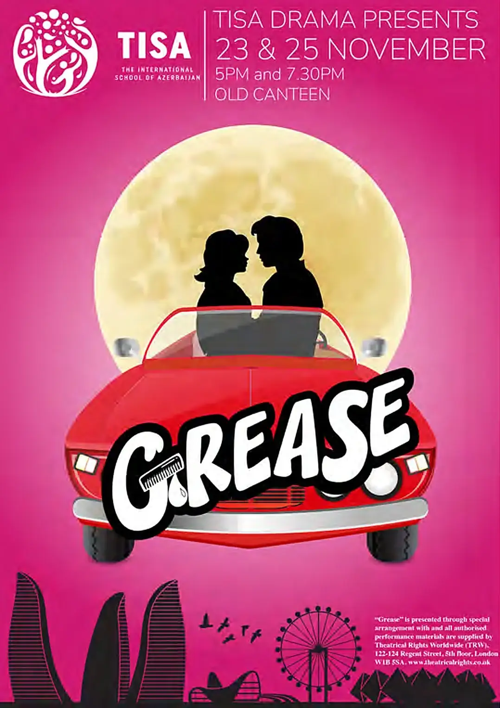
The project
A promotional identity for the school’s production of Grease, built to create recognition and anticipation before opening night.
Credits
- Role Poster · creative direction
- Also Promo trailer · production & editing
- Production TISA Drama presents Grease
- Performances 23 and 25 November
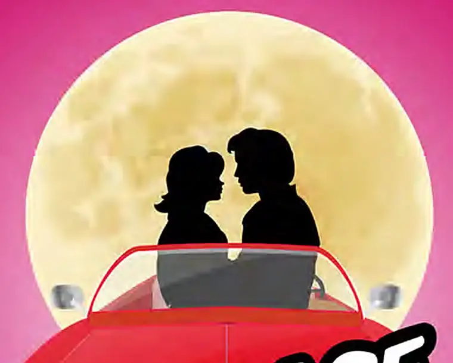
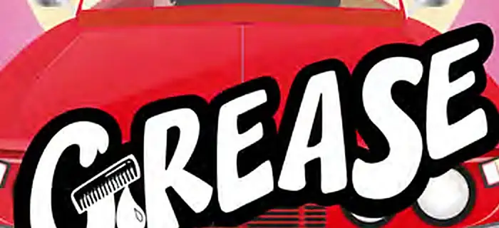
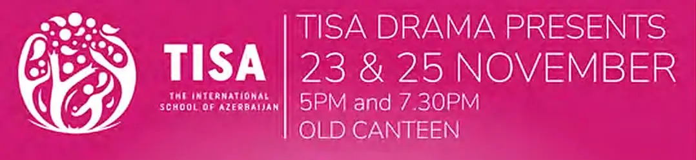
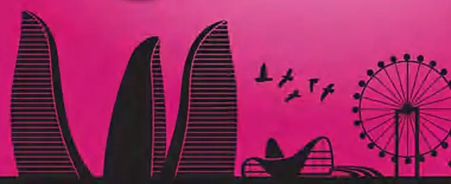
Retro, bold and promotional. The poster and a promo trailer, produced and edited for the show, built recognition before opening night.
Grease in the publishing case →03 · Theatre programme designThe International School of Azerbaijan · 2024
Oliver! JR. Victorian London.
Staged in Baku.
One graphic idea carried through ten pages: Tower Bridge in red against a pale moon, condensed poster lettering, and a city skyline along the foot of every text page.
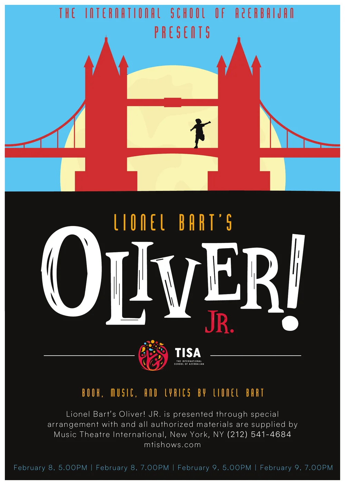
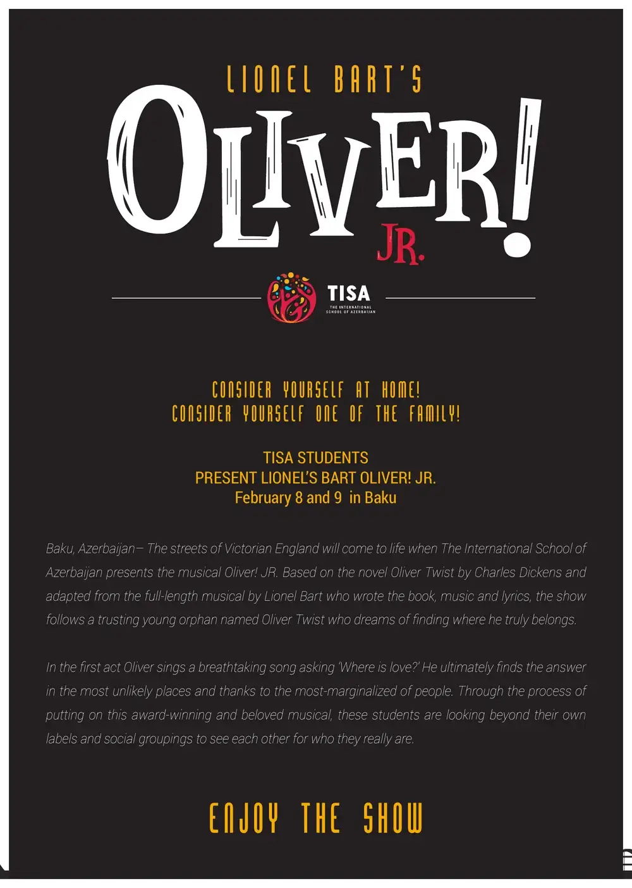
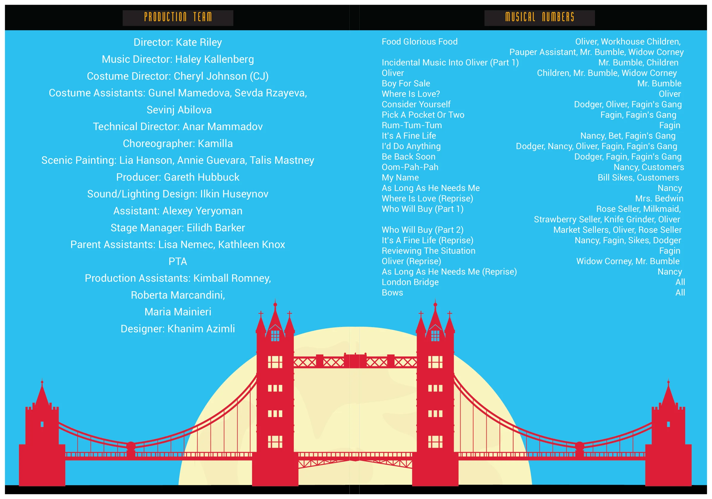
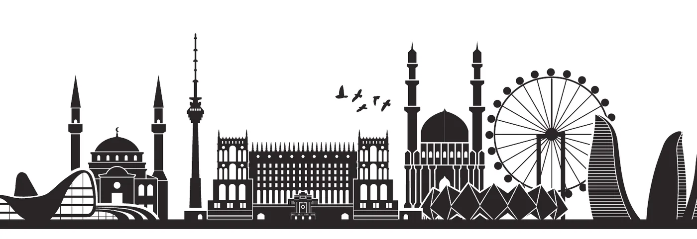
London on stage. Baku underneath. The skyline under every text page ties the production to its home city.
Format
10 pages · 216 × 303 mm
Contents
Cover, press notes, production team, musical numbers, two cast lists
Performances
4 shows · 8 and 9 February. Cast pages are not shown; the performers are students.
Credited in the programme: “Designer: Khanim Azimli”.
Oliver! JR. in the publishing case →Same idea,
every format.
Theatre print shown from the printed editions for The International School of Azerbaijan. A Little World of Colour frames are taken from the campaign page itself.